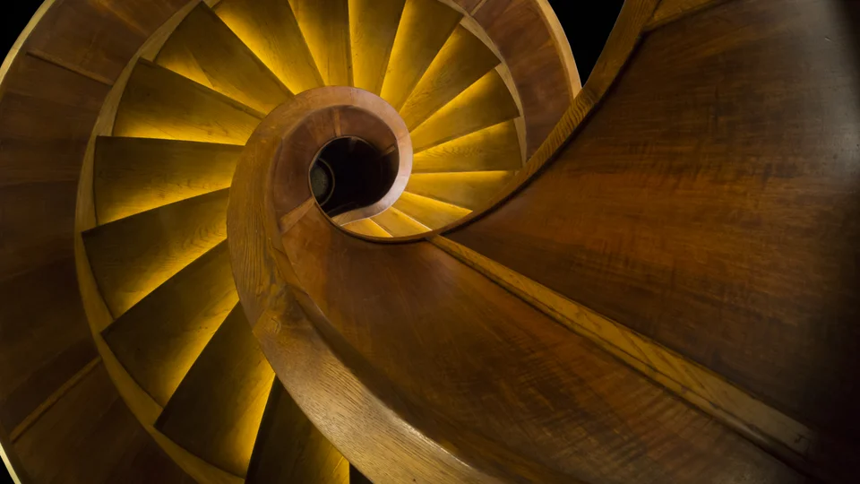
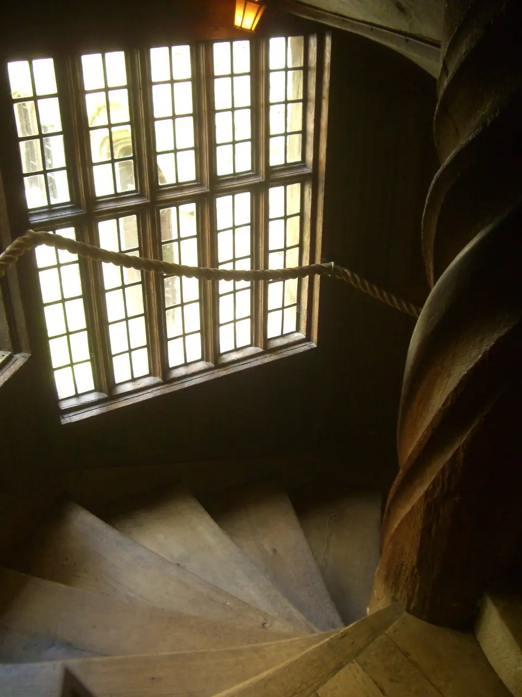
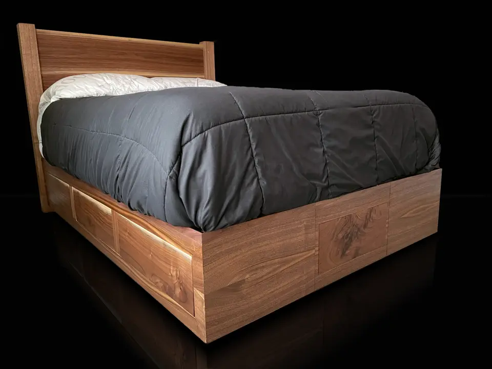

Agencement sur mesure
Conception et installation de dressings personnalisés, meubles vasques en bois, placards sous escaliers et bibliothèques sur mesure dans votre logement à Saint-Grégoire.
Démo Menuisier Rennes intervient à Saint-Grégoire et dans ses alentours pour la conception, la fabrication sur mesure et la pose soignée de tous vos aménagements en bois massif et dérivés.
Nous vous accompagnons de A à Z sur l'ensemble de vos projets résidentiels et professionnels à Saint-Grégoire.
Conception et installation de dressings personnalisés, meubles vasques en bois, placards sous escaliers et bibliothèques sur mesure dans votre logement à Saint-Grégoire.
Création d'escaliers intérieurs adaptés à l'architecture de votre bien à Saint-Grégoire, alliant sécurité, esthétisme chaleureux et robustesse.
Rénovation et pose de parquets massifs ou semi-massifs, plinthes et habillages muraux pour sublimer vos pièces de vie.
Quelques exemples d'ouvrages menuisés livrés avec exigence et sens du détail.



Nous intervenons également dans les localités voisines de Saint-Grégoire :
Un devis détaillé vous est remis gratuitement après étude de votre cahier des charges.
Saint-Grégoire et communes limitrophes Déplacement sur place
+33 4 00 00 00 00
Assureur fictif Contrat n° DEMO-0001